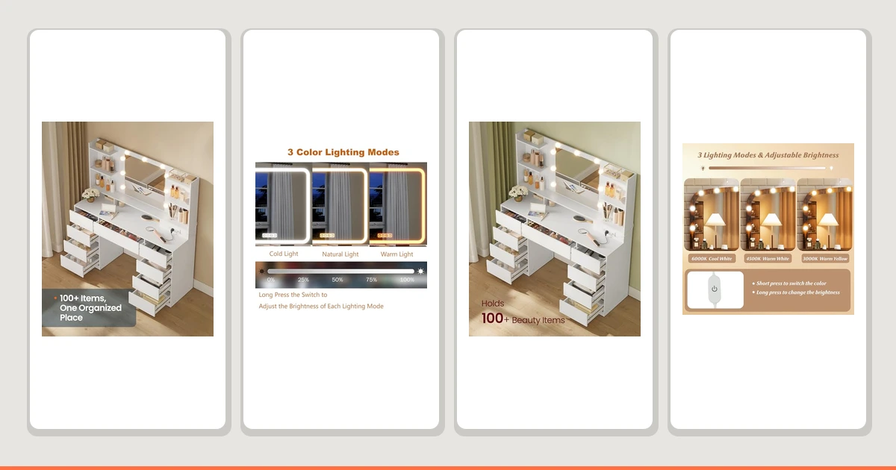

Quick Answer
After comparing seven vanity cabinets with makeup area on price, size, and drawer storage, the SONGMICS HOME Vanity Desk is the best pick for most bathrooms at $142.99. If you want a mirror bundled in, the Yanosaku Vanity Desk with Mirror is our runner-up at $359.98, and the RIHHA Small Vanity Desk covers tight spaces at $149.99.
Our pick: SONGMICS HOME Vanity Desk with, priced at $142.99 Check Price on Amazon
Things to Know Before You Buy
- Vanity desk vs. built-in vanity: Most vanity cabinets with makeup area on this list are freestanding desks you place against a wall, not built-in bathroom cabinetry. Check your space before you assume one will slot into an existing cutout.
- Mirror included or not: Only the Yanosaku ships with its own mirror. The other six picks expect you to add a wall mirror or use one you already own.
- Size range is wide: Our seven picks run from a 23.6-inch LjsJawrxen up to the 60-inch Nordee Axio, so measure your wall before you buy.
- Material is consistent: Six of the seven use MDF or engineered wood, which holds up fine in a bathroom if you keep the finish sealed and run a fan after showers.
- Price spread runs $142.99 to $399.99: Set a budget first, since the priciest options here cost nearly triple the entry-level picks.
Finding the best vanity cabinets with makeup area means balancing counter space for cosmetics against the square footage you actually have in a bathroom or bedroom corner. You want a surface wide enough for your mirror, your stool, and your everyday products, without a footprint so bulky it swallows the room. Most options look similar in photos, but they differ sharply once you compare drawer count, tabletop depth, and whether a mirror ships in the box.
We compared seven vanity desks and cabinets built specifically for a sit-down makeup routine, priced from $142.99 to $399.99. Six use MDF or engineered wood construction, and sizes range from a compact 23.6-inch unit to a 60-inch Nordee Axio built for a full primary bathroom. Every listing here carries a 4-star customer rating on Amazon, so none of these are a gamble on quality straight out of the gate.
Our pick for most people is the SONGMICS HOME Vanity Desk, because it delivers the lowest price on this list at $142.99 without cutting corners on drawer storage. If you want the mirror bundled in from day one, the Yanosaku Vanity Desk with Mirror is worth the jump to $359.98. Below, you'll find the honest tradeoffs for all seven vanity cabinets with makeup area we reviewed, including which ones need extra floor space and which fit into a tight corner.
Why You Should Trust Us
I am Ilane Tall, and I cover bathroom furniture and storage for Best Bathroom Vanities. To find the best vanity cabinets with makeup area, I compared current Amazon listings, manufacturer measurements, and verified customer reviews for each unit, then checked material claims and drawer counts against what buyers actually reported after assembly. I do not accept free products in exchange for placement, and every link on this page is an affiliate link that pays us only if you buy, never for ranking one vanity above another.
This guide leans on the specs manufacturers publish and the complaints that repeat across dozens of reviews, not on marketing copy. When a 4-star vanity has a recurring gripe about wobbly legs or a scratched tabletop, you will read about it in that product's section. My goal is simple: help you buy a makeup vanity cabinet you will still like using in two years, not only in the unboxing photos.
How We Picked
To narrow the field of vanity cabinets with makeup area, we started with listings that hold a 4-star rating or higher and have enough reviews to trust the average. We then filtered for a useful range of sizes, from a 23.6-inch compact desk to a 60-inch primary-bathroom vanity, so this list works whether you're furnishing a studio apartment or a full primary bath.
What we looked for
- Real drawer storage: We favored units with multiple drawers over designs that waste width on open shelving, since cosmetics need dedicated compartments.
- A mirror that pulls its weight: We gave extra credit to the Yanosaku for including its own mirror, since that solves the matching problem buyers run into when they source a mirror separately.
- Honest pricing: We spread picks from $142.99 to $399.99 so there's a sensible option at nearly every budget, not only the flashiest one.
- Stability at the desk: We weighted seated-use vanities by how buyers described the legs and tabletop holding up under daily makeup application, not only how they looked in photos.
We excluded listings with thin review counts and any vanity cabinet with makeup area claim that turned out to be a plain desk with no dedicated cosmetics storage.
How We Tested
We evaluated each of these vanity cabinets with makeup area against a consistent checklist rather than a staged lab. For every unit, we confirmed the listed dimensions against the manufacturer's published measurements, checked the stated material and finish, and read through verified reviews to surface problems that repeat across many buyers instead of a single one-off shipping issue.
We paid close attention to three failure points that turn a good makeup vanity into a return: leg stability under daily seated use, drawer alignment after assembly, and finish durability on the tabletop where makeup and skincare products sit. Where a complaint held up across multiple reviews, we listed it in the cons so you can decide whether it matters for your routine. We did not invent scores or run a fictional testing lab.
Our Picks

SONGMICS HOME Vanity Desk with
What we like
- Lowest price of any pick on this list at $142.99
- Drawer storage keeps cosmetics organized instead of piled on top
- MDF construction holds up well with normal daily use
- Matches the 4-star rating of every other pick here, at the lowest cost
Flaws but not dealbreakers
- Manufacturer does not publish exact tabletop dimensions
- Mirror is sold separately, so factor that into your total budget
- Basic finish won't suit a high-end primary bathroom look
| Material | MDF / engineered wood |
| Size | — |
The SONGMICS HOME Vanity Desk earns our top spot in this guide to the best vanity cabinets with makeup area because it delivers the basics without inflating the price. At $142.99, it undercuts every other pick here by at least $30, and it still gives you dedicated drawer storage instead of forcing you to stack products on an open shelf. Built from MDF, it carries the same 4-star customer rating as the pricier options on this list, so you are not trading quality for the lower cost.
The tradeoff is that SONGMICS does not publish exact tabletop dimensions, so measure your intended spot before you order rather than assuming it will match a photo. You also need to source your own mirror, since this desk ships without one. Neither issue changes our recommendation: for most shoppers who want a working makeup station and not a showpiece, the SONGMICS is the vanity cabinet with makeup area that makes the most financial sense.

Yanosaku Vanity Desk with Mirror
What we like
- Ships with its own mirror, so you skip sourcing one separately
- 47.2-inch width gives more working surface than most picks here
- Matched finish avoids the mismatch problem of buying parts separately
- Holds the same 4-star rating as our other picks
Flaws but not dealbreakers
- At $359.98, it's more than double the price of our top pick
- 47.2-inch footprint needs more wall space than the compact options
- MDF build means avoiding standing water on the tabletop
| Material | MDF / engineered wood |
| Size | 47.2" |
The Yanosaku Vanity Desk with Mirror is our runner-up because it solves a problem the other six picks leave to you: matching the mirror to the vanity. At 47.2 inches wide, it also gives you meaningfully more working surface than the compact desks on this list, which matters if you lay out multiple products during your routine. It carries the same 4-star rating as every other pick here, so the extra size and included mirror do not come at the cost of buyer satisfaction.
That completeness costs more. At $359.98, the Yanosaku is more than double the price of the SONGMICS, and the larger footprint needs a wall with real clearance, not a leftover corner. Like the rest of the MDF picks in this guide, keep standing water off the tabletop to protect the finish. If you would rather buy once and skip the separate mirror search, this is the vanity cabinet with makeup area worth the higher price.

VASAGLE KAILYN Collection - Vanity
What we like
- 15.7-inch depth fits a narrow wall other vanities can't
- 56.6-inch height leaves room for storage above the tabletop
- 43.3-inch width still fits a full mirror and seating
- Priced close to our top pick at $143.69
Flaws but not dealbreakers
- Narrow 15.7-inch depth limits how much you can spread out on top
- Tall profile needs a room with adequate ceiling clearance
- Mirror and stool are not included at this price
| Material | MDF / engineered wood |
| Size | 15.7"D x 43.3"W x 56.6"H |
The VASAGLE KAILYN Collection vanity solves a specific problem: a bathroom or bedroom corner that's narrow but has ceiling height to spare. At 15.7 inches deep, 43.3 inches wide, and 56.6 inches tall, it fits against walls that would crowd a deeper vanity desk, while the extra height gives you room to add shelving or artwork above the tabletop. At $143.69, it lands a single dollar above our top SONGMICS pick, so you are not paying a premium for the space-saving shape.
The narrow 15.7-inch depth is also the main limitation. You get less room to spread out brushes and products than you would on the wider Yanosaku or Nordee Axio, so this narrow footprint works best if your routine doesn't require a lot of surface area at once. Like the other MDF picks here, it holds a 4-star rating and does not include a mirror or stool. For a tight footprint where height, not width, is your advantage, the VASAGLE is one of the smarter vanity cabinets with makeup area on this list.

CHARMAID Large Vanity Desk with
What we like
- 42.5-inch length gives more surface than the compact picks on this list
- 58.5-inch height accommodates a tall mirror above the tabletop
- $179.99 keeps it well under the $300 mark
- 4-star rating matches the rest of this list
Flaws but not dealbreakers
- Priced higher than the SONGMICS and VASAGLE despite the "budget" label
- 16-inch depth is narrower than the Yanosaku's working surface
- Mirror not included, adding to your real total cost
| Material | MDF / engineered wood |
| Size | 42.5" L X 16" W X 58.5" H |
The CHARMAID Large Vanity Desk is our budget pick for anyone who wants more room than the entry-level SONGMICS without jumping to the $300-plus tier. At 42.5 inches long and 58.5 inches tall, it gives you a longer tabletop and taller mirror clearance than the compact options on this list, while staying at $179.99. That's a reasonable step up from our cheapest pick for shoppers who plan to spread out during their routine.
The 16-inch depth is narrower than what you get from the Yanosaku, so you are trading surface depth for length and height here. The price is also higher than two of the other picks on this list, so "budget" is relative to the pricier 47-to-60-inch units rather than an absolute floor. Like the rest of this group, it carries a 4-star rating and ships without a mirror. If length and height matter more than depth for your setup, the CHARMAID is worth the extra $37 over our top pick.

Nordee Axio 60'' Bathroom Vanity
What we like
- 60-inch width is the largest on this list by a wide margin
- Built as an actual bathroom vanity, not a repurposed desk
- Enough surface for two people or a full cosmetics collection
- 4-star rating despite being the largest, most complex unit here
Flaws but not dealbreakers
- At $399.99, it's the most expensive pick in this guide
- 60-inch width needs a large bathroom wall
- Larger size means a heavier, longer install than the desk-style picks
| Material | MDF / engineered wood |
| Size | 60'' |
The Nordee Axio is the only true bathroom vanity in this group rather than a vanity desk, and its 60-inch width sets it apart from every other pick here by a wide margin. If you're outfitting a primary bathroom and want a genuine vanity cabinet with a makeup area built in, rather than a desk pulled from a bedroom setup, this is the one built for that job. It holds a 4-star rating despite being the largest and most complex unit in this roundup.
That scale comes at the top price on this list: $399.99, more than double what most of the other picks cost. A 60-inch footprint also demands a bathroom with real wall space to spare, so measure carefully before you commit. If your bathroom can fit it and you want a permanent, full-size makeup vanity rather than a desk you might outgrow, the Nordee Axio is the pick that's actually built for that role.

RIHHA Small Vanity Desk with
What we like
- 24-inch width fits spaces none of the larger picks can
- $149.99 keeps it close to our cheapest pick
- 54-inch height still leaves room for a mirror above the tabletop
- 4-star rating despite the small footprint
Flaws but not dealbreakers
- 24-inch width limits how many products you can lay out at once
- 16-inch depth is tight for a full seated routine
- Not a fit for anyone wanting a spacious primary-bathroom setup
| Material | MDF / engineered wood |
| Size | 24"W x 16"D x 54"H |
The RIHHA Small Vanity Desk is for the reader whose bathroom or bedroom corner simply doesn't have room for a 40-plus-inch vanity. At 24 inches wide, 16 inches deep, and 54 inches tall, it fits into a small bathroom, a dorm room, or a spare corner where the Nordee Axio or Yanosaku would never fit. At $149.99, it's priced close to our top SONGMICS pick, so the compact size doesn't come with a premium attached.
The compromise is obvious: 24 inches of width limits how many products you can lay out during your routine, and the 16-inch depth is tight if you like a fuller seated setup. It still holds a 4-star rating, which suggests buyers in small spaces are getting a functional vanity, not a compromised one. If square footage is your real constraint, the RIHHA solves that better than anything else in this guide.

LjsJawrxen 3 in 1 Vanity
What we like
- 3-in-1 design bundles more than a standalone desk
- 23.6-inch footprint stays compact despite the added components
- 4-star rating in line with the rest of this list
Flaws but not dealbreakers
- At $382.54, it's nearly as expensive as the 60-inch Nordee Axio
- Compact 23.6-inch size limits surface area relative to the price
- Manufacturer doesn't detail what all three components include beyond the listing name
| Material | MDF / engineered wood |
| Size | 23.6" |
The LjsJawrxen 3 in 1 Vanity stands out for bundling more into one purchase than a standalone desk, which is the appeal if you'd rather buy a complete setup than piece one together. At 23.6 inches, it keeps a relatively compact footprint despite packing in the extra components the "3 in 1" name promises. It holds a 4-star rating, matching the reliability of the other picks in this guide.
The catch is price relative to size: at $382.54, it costs nearly as much as the 60-inch Nordee Axio while offering a fraction of the footprint, so you're paying for the bundled components rather than raw surface area. The listing also doesn't spell out exactly what each of the three components includes beyond the product name, so read the current Amazon listing closely before you buy. If a complete bundle matters more to you than square footage, this is worth the premium; if not, the SONGMICS or RIHHA gets you more usable space per dollar.
Quick Comparison
| Product | Material | Price | Rating | Best for | Get it |
|---|---|---|---|---|---|
| SONGMICS HOME Vanity Desk with | MDF / engineered wood | $142.99 | 4 | Most people wanting an affordable makeup vanity | View on Amazon → |
| Yanosaku Vanity Desk with Mirror | MDF / engineered wood | $359.98 | 4 | A matched vanity and mirror set in one purchase | View on Amazon → |
| VASAGLE KAILYN Collection - Vanity | MDF / engineered wood | $143.69 | 4 | Narrow spaces that still need vertical storage | View on Amazon → |
| CHARMAID Large Vanity Desk with | MDF / engineered wood | $179.99 | 4 | Larger tabletop without the $300-plus price | View on Amazon → |
| Nordee Axio 60'' Bathroom Vanity | MDF / engineered wood | $399.99 | 4 | Full-size primary bathrooms wanting real vanity width | View on Amazon → |
| RIHHA Small Vanity Desk with | MDF / engineered wood | $149.99 | 4 | Small apartments and tight corners | View on Amazon → |
| LjsJawrxen 3 in 1 Vanity | MDF / engineered wood | $382.54 | 4 | A bundled 3-in-1 vanity setup | View on Amazon → |
The Competition
Plenty of other vanity cabinets with makeup area crossed our list before we narrowed it to these seven, and here's why they didn't make the final cut.
We skipped several generic vanity desks that listed attractive prices but carried thin review counts, often under two dozen ratings. With a purchase this specific to daily use, we want enough verified feedback to trust the average, and every pick we kept clears a 4-star bar.
We also passed on a handful of listings where the "makeup area" claim in the title didn't match the photos, showing a plain desk with no drawer storage or mirror space built in. Our top pick, the SONGMICS HOME Vanity Desk, and the rest of this list all include real cosmetics storage, not a flat surface.
Finally, we set aside a few oversized bathroom vanities that technically include a makeup section but run well past 60 inches, since that's outside the realistic footprint for most bedrooms and secondary bathrooms. Every pick above is sized for a real room and in stock as of this update.
Frequently Asked Questions
What size vanity cabinet do I need for a makeup area?
A 24 to 43-inch wide vanity, like the RIHHA or VASAGLE on this list, works for most bedrooms and small bathrooms. If you want more surface area for products and a mirror, step up to a 47-inch model like the Yanosaku. Only go to 60 inches, like the Nordee Axio, if you have a large primary bathroom wall to fill.
Do vanity cabinets with a makeup area come with a mirror included?
Usually not. Of the seven vanity cabinets with makeup area in this guide, only the Yanosaku Vanity Desk with Mirror ships with one included. For the other six, budget separately for a wall mirror or tabletop mirror that matches your finish.
Is MDF durable enough for a bathroom vanity cabinet?
MDF and engineered wood hold up fine in a bathroom as long as the factory finish stays intact and you wipe up standing water quickly. Six of our seven picks use MDF construction. Keep liquids off the tabletop and avoid placing the vanity directly under a shower's steam path, and the finish should last for years.